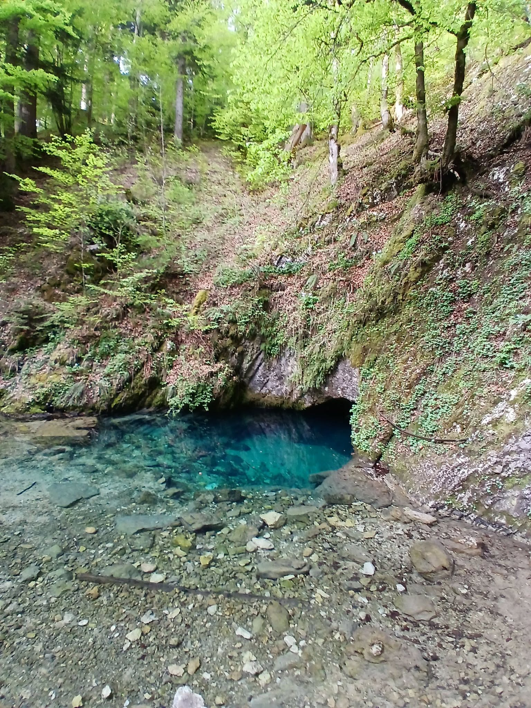

La source bleue
Ou la légende de Berthe de Joux
L’eau est
trop bleue
pour être
innocente.
On dirait
qu’elle
se souvient.
Au creux
des roches
froides
où le silence
veille,
Une eau d’azur
profond
murmure
un vieux
tourment ;
On dit
qu’en ses reflets,
sous l’ombre
qui sommeille,
Palpite un cœur
brisé
depuis déjà
mille ans.
Berthe
aux yeux
de ciel,
douce
et pâle
épouse,
Attendait
un retour
que le vent
lui refusa ;
Les croisades
lointaines
avaient scellé
la chose :
Son seigneur
reposait,
croyait-elle,
sous la croix.
Alors
vint un chevalier,
porteur d’aube
et de flamme,
Amey,
mirage tendre
aux serments
retrouvés ;
Dans ses bras
renaissait
la chaleur
d’une âme,
Et l’amour,
comme un feu,
osa se rallumer.
Berthe
croyait
au silence
des morts,
mais les hommes
reviennent —
et brisent tout.
la guerre
rend parfois
ce qu’elle
avait pris,
Et l’ombre
d’Amauri
franchit
les murs
du temps ;
Dans ses yeux
consumés
grondait l’orage
noirci
D’un honneur
déchiré,
d’un retour
trop vivant.
Un amour,
puis deux,
et soudain
le fer,
le sang,
le cri
qu’on enferme
avec elle.
Le fer
chanta,
cruel
et sans prière,
Le sang
rougit
la pierre
et glaça
le destin ;
Amey tomba,
vaincu,
dans un soupir
de terre,
Et l’amour expira
sous le glaive
inhumain.
On l’a laissée
vivre
face à ce qui
n’est plus.
Berthe
fut murée
dans un cachot
de nuit,
Condamnée
à veiller
un cadavre
adoré ;
Alors
elle a pleuré,
longtemps,
jusqu’à user
la pierre,
jusqu’à colorer
l’eau.
Ses larmes,
une mer,
jour après jour
sans bruit,
Ont creusé
la montagne
et l’ont bleutée
à jamais.
Et la source
aujourd’hui,
limpide
et infinie,
Porte encore
en son cœur
ce chagrin
éternel :
C’est le regard
noyé
d’une amante
punie,
Qui pleure
dans la pierre
un amour
criminel
Djamel Metref
Bians Les Usiers le 30 Avril 2026
La source bleue (Malbuisson)
Une très cruelle et tragique légende locale explique que tout ce bleu de la source viendrait des larmes des yeux bleus de Berthe de Joux, pleurant la mort de son amant au XIIe siècle. Son jeune mari, le seigneur croisé Amauri III de Joux (famille de Joux du fort de Joux voisin), longtemps passé pour mort durant les croisades, revient contre toute attente quelques années plus tard, et découvre sa jeune épouse qui se croyait jeune veuve, avec un nouvel amoureux, le chevalier Amey de Montfaucon (famille de Montfaucon), revenu lui aussi des croisades. Ivre de rage et de douleur, Amaury tue l'amant et fait cruellement enfermer son épouse à vie dans un minuscule cachot de son fort de Joux, avec vue sur la dépouille de son amant.
(Source Wikipedia)
Crédit photo © 2026 Elisabeth Contejean

← Tous les poèmes
La source bleue
Carnets de voyages · Nature et écologie